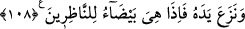
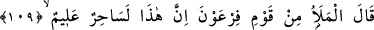
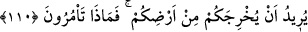

108. Ve elini (cebinden) çıkardı. Birdenbire o da seyredenlere bembeyaz
görünüverdi.
Sonra Firavun Mûsâ (a.s.)’a, başka bir mucizesinin olup olmadığını sordu. Mûsâ
(a.s.) da, var diyerek :
“Ve elini” cebinden veya koltuğunun altından “çıkardı, birden o, bakanlar için
bembeyaz parlayan” beyaz, nûranî, alışılmışın dışında ve durumuna şaşırarak
bakışların üzerinde toplandığı “bir şey oldu.”
Rivayete göre Mûsâ (a.s.), Firavun’a elini gösterip “Bu nedir?” diye sordu. O da:
“Senin elin.” diye cevap verdi. Sonra Mûsâ (a.s.), elini cebine soktu. Dışarı çıkardığı
zaman son derece beyaz ve nûrânî idi. Aydınlığı, güneşin aydınlığını bastırdı. Halbûki
Mûsâ (a.s.), oldukça esmerdi.
Burada ellerin eşyaya değmeden önce beyaz olduğuna işaret vardır. Eşyaya değince
zulmânî olmuştur. Tekrar eşyadan el çekince yine eskiden olduğu gibi beyaz olur. İyi
anla!
109-110. Firavun’un kavminden ileri gelenler dediler ki: Bu çok bilgili bir
sihirbazdır. Sizi yurdunuzdan çıkarmak istiyor. Ne buyurursunuz?
Firavun, Musa (a.s.)’ın mucizelerini görünce kavminin eşrafı ile Mûsâ (a.s.)’ın
durumunu istişare etti. “Firavun kavminden ileri gelen bir topluluk” kendilerine
danıştığı kavminin eşrâfı “dediler ki: “Bu, çok bilgili bir büyücüdür.” Sihir ilmini çok
iyi bilen ve bu konuda mâhir bir kimsedir.
O zaman sihir, önde gelen ve çok meşgul olunan bir işti. Her san‘at ehlinin beceri ve
maharetlerine göre farklı derecelerde olduğu şüphesizdir. Bu sebeple Mûsâ’nın
mucizelerini gören topluluk, onun sihir ilminde son derece ehliyetli ve becerikli
olduğunu ve bu bilgisini, mülk ve risalet arzusuna vesile kıldığını sandılar. İşte bu
sebeple dediler ki:
Yaptığı
sihirle
“sizi
yurdunuzdan”
Mısır’dan
“çıkarmak”
hâkimiyeti
İsrailoğulları’nın eline vermek “istiyor,” dediler. Firavun, onların bu sözünü işitince:
“Ne buyurursunuz?” yani, “Ne yapmamı tavsiye edersiniz?”, “Durum bundan ibâretse,
ne yapmamı işaret edersiniz?”